Dataset Capture
This page has tutorials for capturing or collecting samples for datasets and then uploading the samples into EdgeFirst Studio for annotation. At the bare minimum, datasets can be captured with any device with a camera such as a phone. However, EdgeFirst Platforms such as a Maivin or a Raivin can also capture dataset samples for model training which can then be deployed back into the platform for model inference. Image samples will train Vision models. However, devices that are custom fitted with Radar or LiDAR modules such as a Raivin platform can capture dataset samples suited to train Fusion models.
Capture with a Phone
If you have a phone or any device with a camera with Wi-Fi access, follow this tutorial to see how to capture and upload datasets into EdgeFirst Studio.
Data Usage
It is recommended to use a phone connected to a Wi-Fi network. A device connected to mobile data might be subject to intense usage when uploading files; video files or image files can be large in size. In the examples below, the video file used was ~15MB and the image files were ~2MB each.
Limited Datasets
The example below uses a small video recording and only a handful of images. While this is sufficient for demonstrating the workflow, training a model on a limited dataset will typically result in poor performance when deployed in real-world conditions that differ from the training samples.
To improve model robustness and generalization, it is recommended to collect training data across a variety of conditions, backgrounds, lighting environments, and object variations. As a general guideline, a minimum dataset size of approximately 1,000 images or video frames is recommended, although the optimal size depends on the complexity of the task.
Device UI May Vary
The video and image capture screenshots shown in this guide were taken on a Samsung smartphone. Camera app layouts, button locations, labels, and available options may differ on other devices and operating system versions. For device-specific steps, refer to your phone manufacturer documentation or device manual.
Record Video
Using a smartphone, try to record a 30 second or more video with the camera application showing various orientations of coffee cups. Typically, the video recording can be started by pressing the red circular button. The video can be stopped by pressing the same button again.

Capture Images
Furthermore, you can also capture individual images as shown below. You can take image snapshots from the camera by pressing the white circular button.
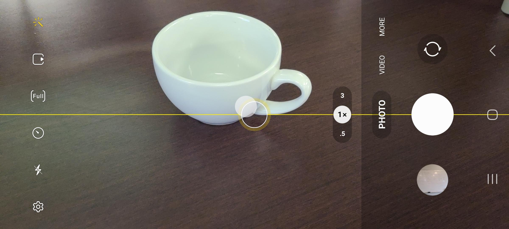
Leveraging Videos
It is recommended to use videos rather than individual images. This is because the Automatic Ground Truth Generation (AGTG) feature leverages SAM-2 with tracking information which only needs a single annotation to annotate all frames. However, individual images requires more effort by annotating each image separately.
Create Dataset
If you have a video recording or sample images for your dataset, you can create a dataset container in EdgeFirst Studio to contain your video frames or images and annotations.
Navigate to a web browser and login to EdgeFirst Studio. Once logged in to EdgeFirst Studio, navigate to your project. In this case the project name is "My First Project". Click on the "Datasets" button that is indicated in red below.
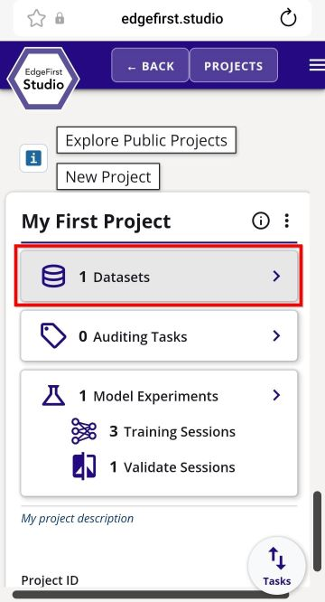
This will bring you to the Datasets Dashboard of the selected project. Create a new dataset container by clicking the "Actions" dropdown on the top right and then click the "New" button that is indicated in red.

Enter a name for the dataset and annotation container, specify the labels, and provide a dataset description in the fields shown below. The values are entirely up to you and do not need to match the example. Once all required fields have been completed, click "Create" to create the dataset.

Your created dataset will look as follows.
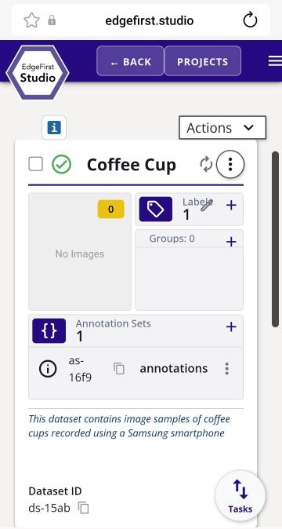
Upload Video
Video files can be uploaded into any dataset container in EdgeFirst Studio. Choose the dataset container to upload the video file. In this case, the dataset is called "Coffee Cup". Click on the dataset context menu (three dots) and click "Import".
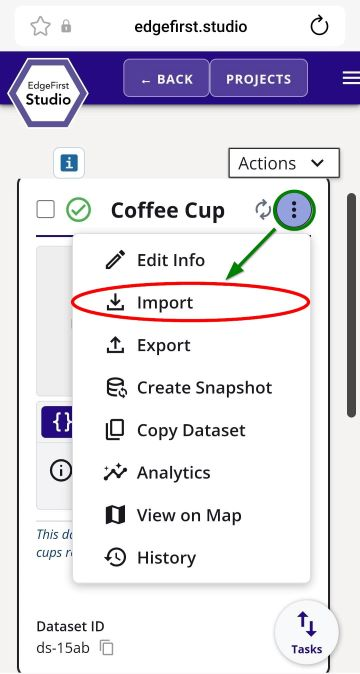
This will bring you to the "Import Dataset" page.

Click on the drop-down that says "Import Type" and then specify "Videos" and then click "Done" as shown below.
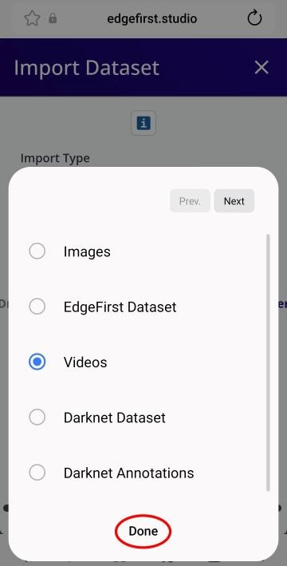
Now that the import type is specified to a "Videos", click on "select files" as indicated.
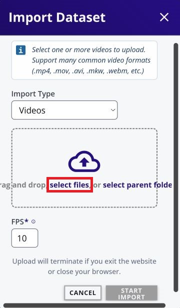
On an android device, this will bring up the option to specify the location of the files.

In my current setup, I have selected "My Files" from the options above and then "Videos" which will allow me to pinpoint the location of the video I have recorded.

After selecting the video file, the FPS (frames per second) value is automatically set to 1 by default. You may adjust this value to match your desired frame extraction rate. When ready, click Start Import to begin importing the video.
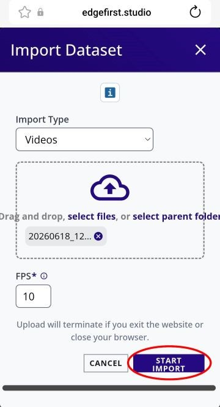
This will start the import process. For a 30-second video, the import typically takes about 2 minutes to complete.
Once the import finishes, the number of images in the dataset should increase to reflect the newly imported frames. If the dataset does not appear to update, refresh the browser to view the latest changes.
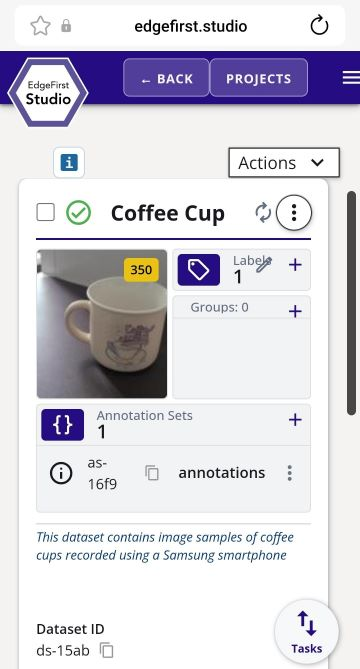
Upload Images
HEIC is not fully supported
Apple devices capture HEIC image formats by default. This format has not been fully supported yet in EdgeFirst Studio. Please make sure to use JPEGs, JPGs, or PNGs for uploading images to EdgeFirst Studio.
Image files can be uploaded into any dataset container in EdgeFirst Studio. Choose the dataset container to upload image files. In this case, the dataset is called "Coffee Cup". Click on the dataset context menu (three dots) and select import.
This will bring you to the "Import Dataset" page.
Click on "select files". This will bring up the option to specify the location of the files.
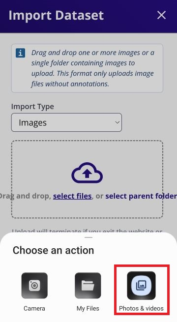
In my current setup, I have selected "Photos & Videos" from the options above and then I have multi-selected the images I want to import by press and hold on a single image to enable multi-select. To import, I pressed "Select".

Once the image files have been selected, click on "Start Import" to start the import process.
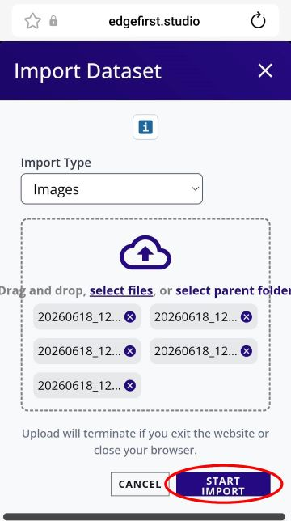
The progress for the image import will be shown.

Once it completes, you should see the number of images in the dataset increase by the amount of selected images. If you do not see any changes, refresh your browser.

In this tutorial you have seen how to capture videos and images from your mobile phone and upload the videos and images into EdgeFirst Studio. Proceed to the Next Steps to see what's next in your dataset creation.
Capture with an EdgeFirst Platform
If you have an EdgeFirst Platform, follow this tutorial to see how to capture and upload datasets into EdgeFirst Studio. Use your browser to connect to the Web UI of the remote device, enter the following URL https://<hostname>/.
Note
Replace <hostname> with the hostname of your device.
You will be greeted with the Maivin Web UI Main Page page.
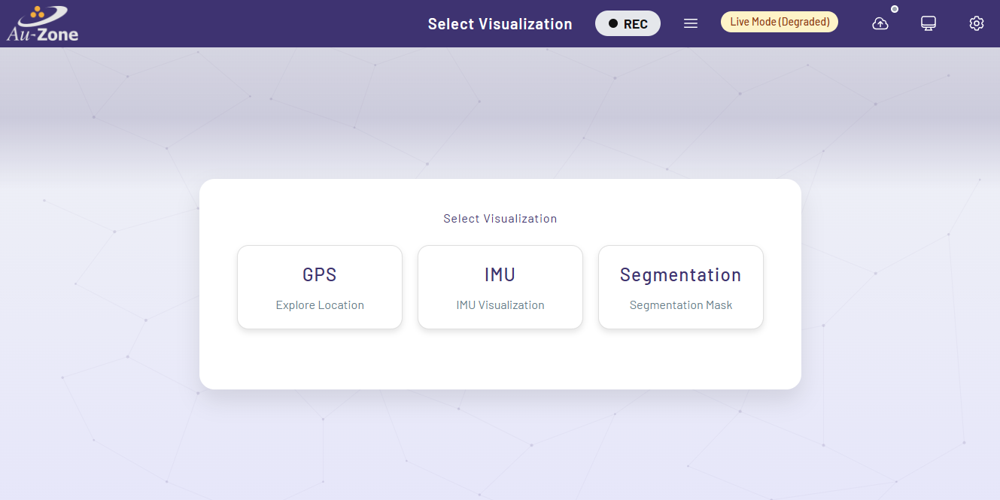
Record MCAP
MCAP recordings can be started and stopped using the Recording Button at the device's top navbar. It is to the left of the MCAP Details hamburger button, which is used to open the MCAP Details Modal.
Both of these buttons are available on every page of the Maivin, Raivin, and other edge devices running the EdgeFirst middleware.
Note
You must close all modals to be able to click the "Recording" and "Details" Buttons.
For more information about recording MCAPs, please read the MCAP Recording section.
Start Recording
To start a recording, simply click the "Recording" button to begin capturing data.

Note
It may take up to 30 seconds for a recording to start, depending on topic tracked.
Low Disk Space
If there is not enough room on the drive to record an MCAP, recording will automatically stop and you will get a "Low Disk Space" error.

If you were to open the MCAP Details Modal while recording, you would see a new MCAP file in the MCAP list.

Stop Recording
To stop recording, click the "Recording" button a second time.
Download MCAP
To download an MCAP recording from the device, click the MCAP Details hamburger button  to open the MCAP Details Modal.
to open the MCAP Details Modal.
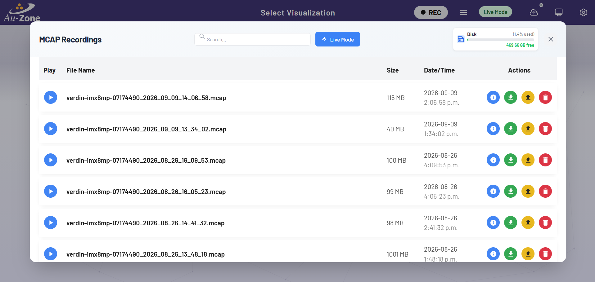
Use the "Download" button  in the row containing the name of the MCAP file you want to download, which will download the MCAP file to your local machine.
in the row containing the name of the MCAP file you want to download, which will download the MCAP file to your local machine.
You can also use an SSH client to copy files off the Raivin.
Upload MCAP
To upload an MCAP Recording into EdgeFirst Studio, first login to EdgeFirst Studio. Once logged in to EdgeFirst Studio, navigate to the "Data Snapshots" under the apps menu.

Once you are in the "Data Snapshots" page, upload the recorded MCAP by clicking "From File" which opens a new window dialog for selecting the MCAP downloaded in your PC.
EdgeFirst Datasets
You can also drag and drop EdgeFirst Datasets ZIP and Arrow files in the "Data Snapshots".

Once the MCAP file is selected, this would start the upload progress in EdgeFirst Studio. This upload progress may take several minutes depending on the size of the MCAP. Once the upload is complete, the status will be shown like the figure on the right.
| Upload Progress | Completed Upload |
|---|---|
 |
 |
In this tutorial you have seen how to record MCAPs using an EdgeFirst Platform and downloaded and uploaded the MCAP recording into EdgeFirst Studio. Proceed to the Next Steps to see what's next in your dataset creation.
Video Tutorials
This video tutorial provides high-level instructions for recording MCAPs using an EdgeFirst Platform. For in-depth documentation, please refer to the MCAP Recording Service.
This video tutorial shows how to download recorded MCAPs.
This video tutorial shows how to upload recorded MCAPs into EdgeFirst Studio.
For more information on managing recordings, please see the Managing Recordings Section.
Next Steps
Now that your samples are uploaded, use the following path depending on your goal.
-
Review uploaded samples
Open the dataset gallery to confirm files were imported correctly.
-
Import an existing dataset
If your data already exists in another format, follow Import Datasets to bring in datasets and annotations.
-
Start annotation
Use Automatic Ground Truth Generation (AGTG) for faster labelling, then use Manual Annotations to fix missed labels or refine results.